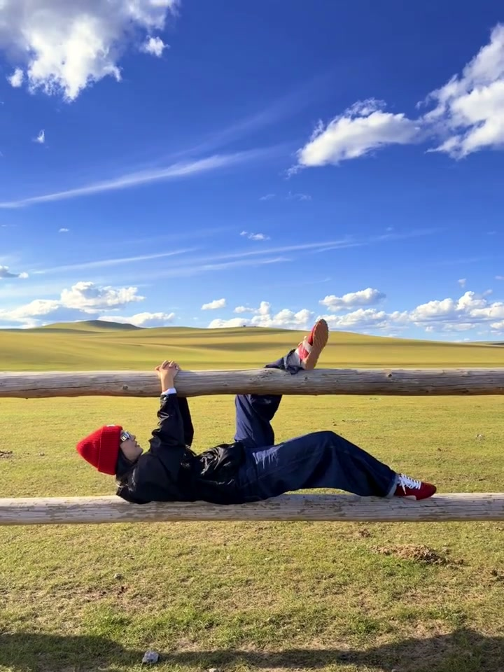
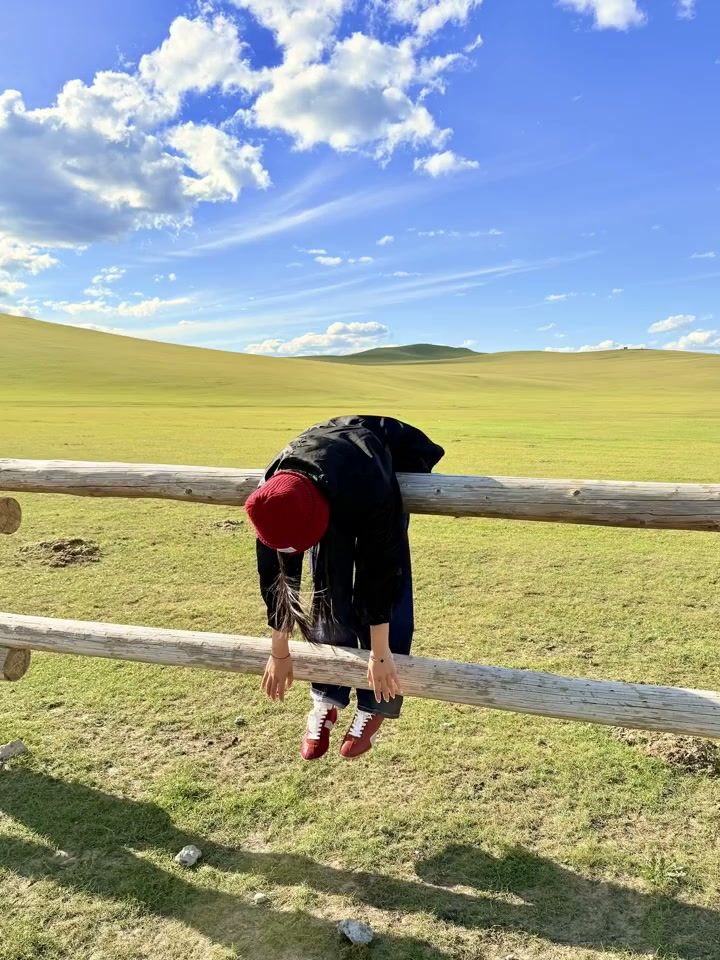
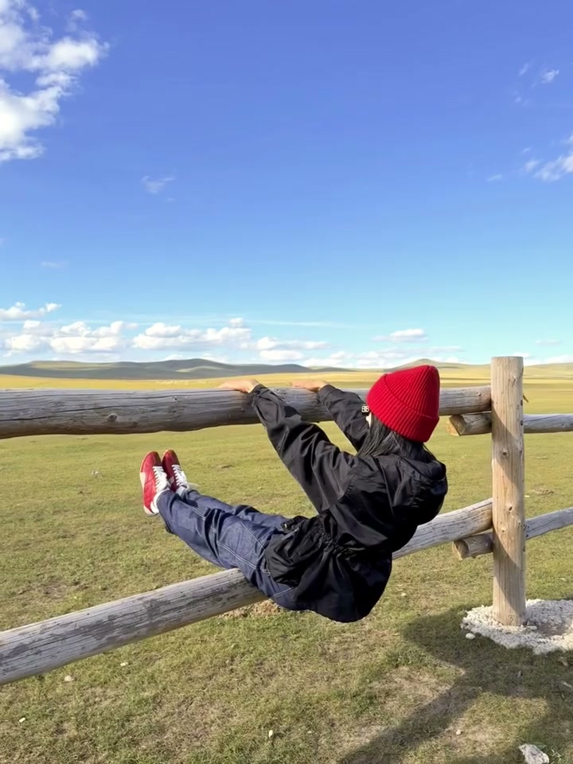
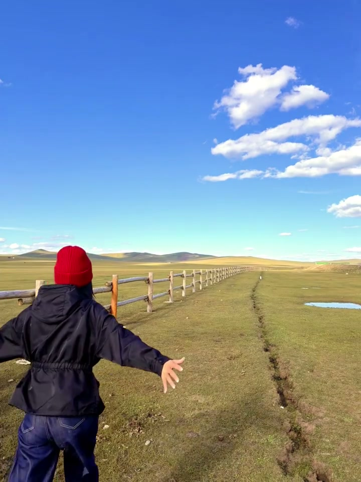
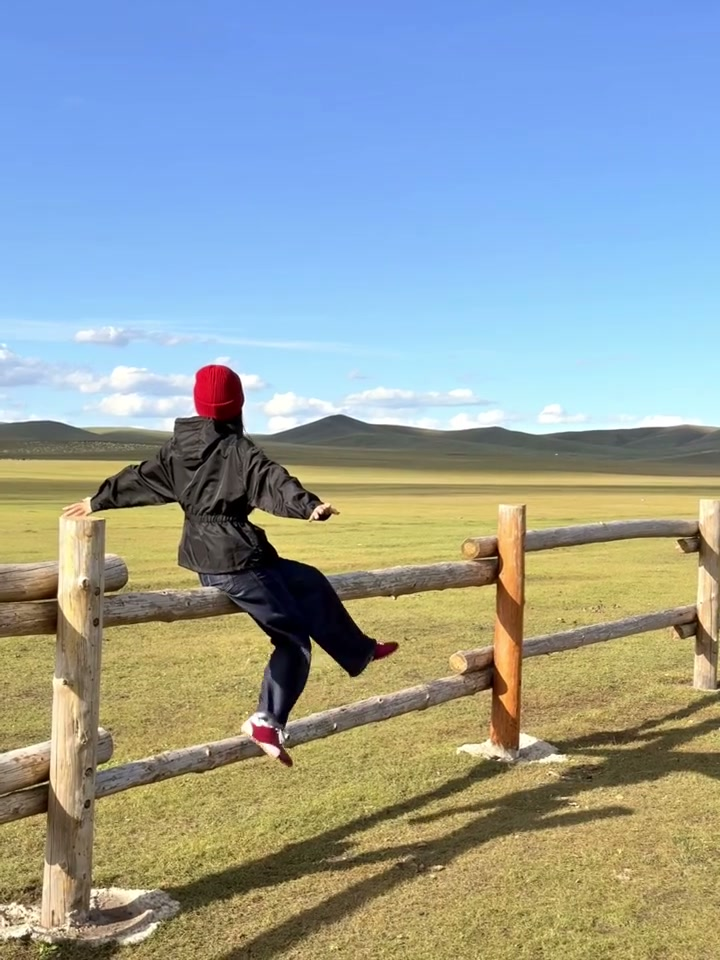
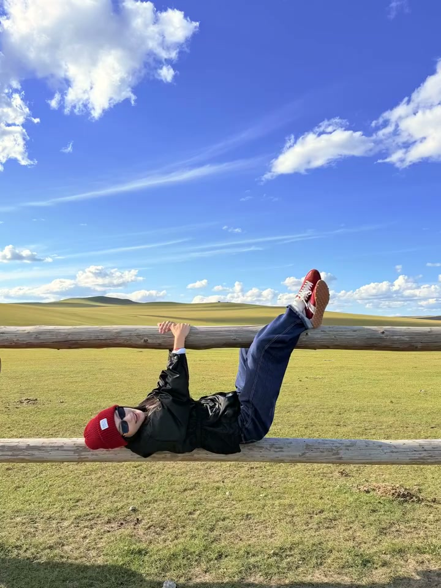
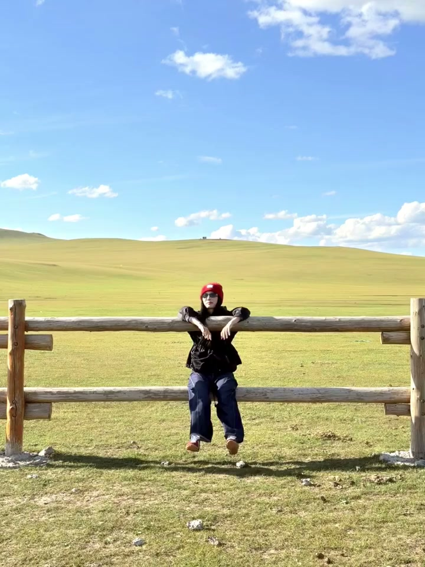
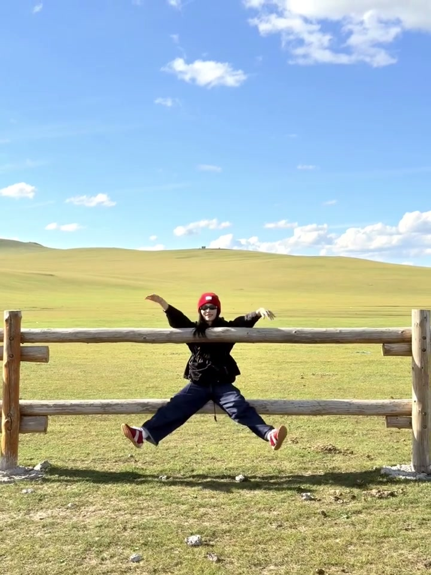

动态动作：奔跑、跳跃、转身
00:00视频以纯视觉示范连续展示9个草原拍照动作。第一组是动态动作：在开阔草原上奔跑、跳跃、转身——动作幅度大，背景空旷，抓拍瞬间最有生命力。

[00:01] 草原奔跑：侧身跑开，连拍抓帧
Prairie run: sprinting sideways, burst-firing frames

[00:03] 跳跃：起跳瞬间张开四肢，空旷背景
Jump: limbs spread at the moment of takeoff against an open background

[00:05] 转身回眸：边走边回头，裙摆有动态
Turning back: glancing back while walking, hem in motion
互动动作：扬草、借风、张臂
00:07第二组是与草原互动：扬起草增加画面动感、借风让头发裙摆飘起、张开双臂迎风拥抱草原——利用环境本身制造氛围。

[00:07] 扬草：抓起一把草抛向天空
Tossing grass: grab a handful and fling it skyward

[00:09] 借风：逆风站位，风带起头发裙摆
Using the wind: stand against it, letting the breeze lift hair and hem

[00:11] 张开双臂迎风，拥抱草原的感觉
Arms open into the wind, embracing the prairie feeling
情绪动作：大笑、回眸、席地而坐
00:13第三组是情绪表达：仰头大笑、回眸看镜头、席地坐进草里——笑容和眼神赋予照片情绪，生命力来自“真的在享受”。

[00:13] 仰头大笑：露出牙齿，比微笑更有生命力
Head-back laughter: showing teeth, more alive than a smile

[00:14] 回眸/席地而坐：自然放松的动作
Glance back / sitting on the ground: naturally relaxed moves
草原拍照的核心不是姿势，是生命力——跑起来、跳起来、笑起来，连拍抓取最自然的一帧。